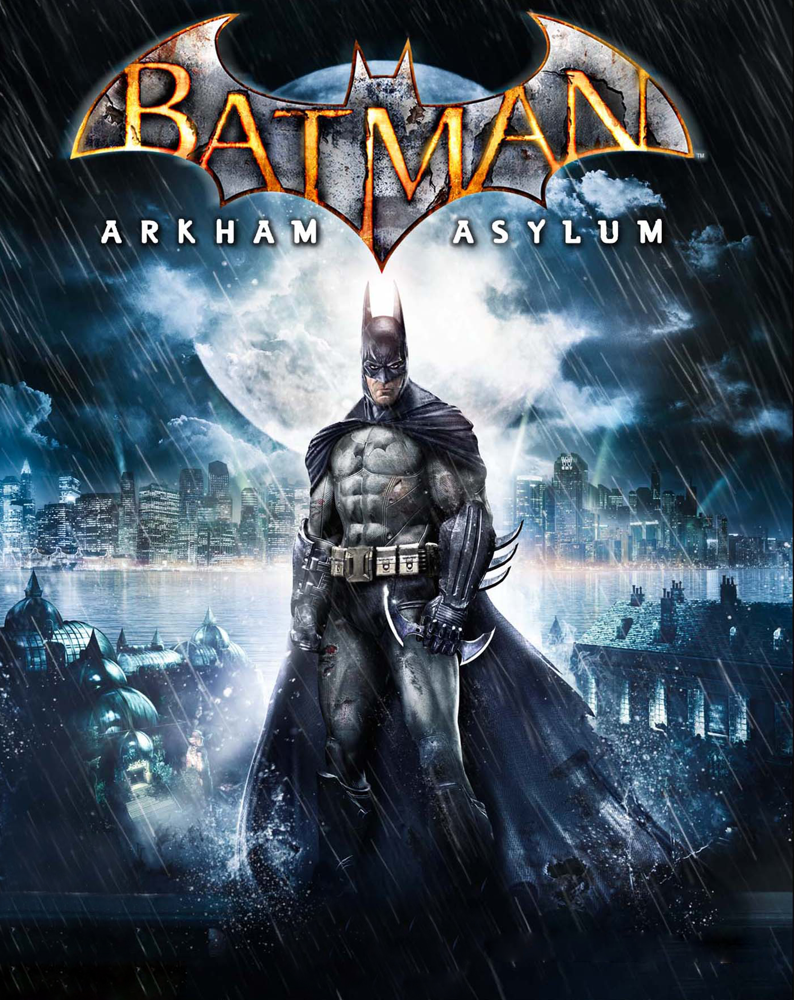
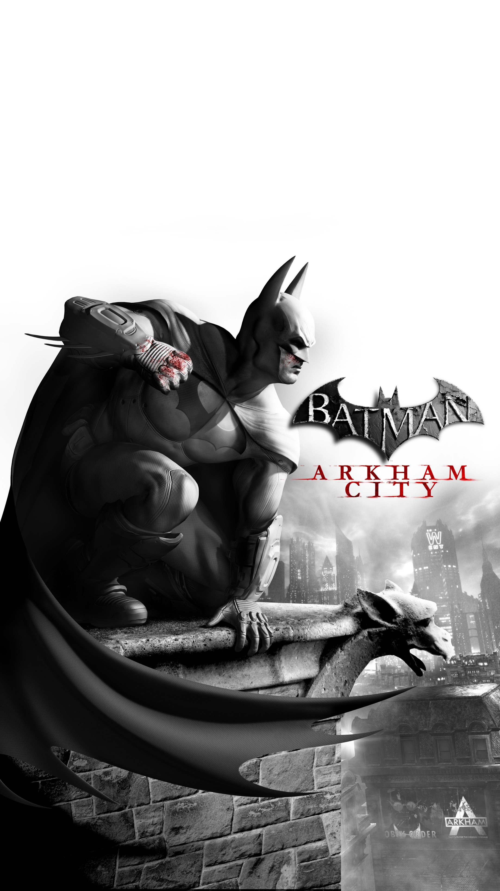
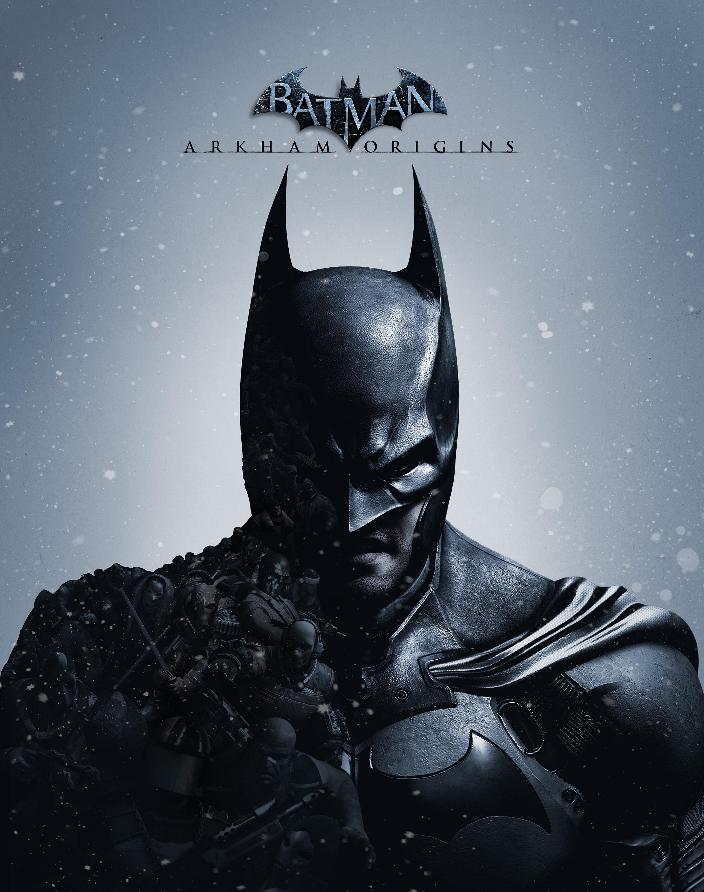
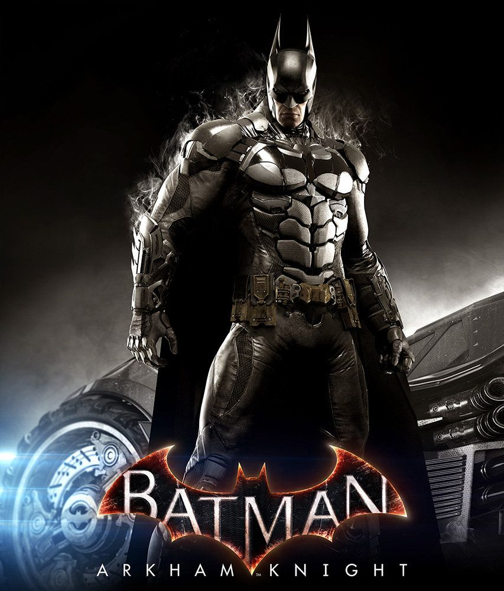

Batman: Arkham— серия приключенческих компьютерных игр, основанных на комиксах о Бэтмене. Разработкой игр занимаются Rocksteady Studios и WB Games Montreal, издательством — Eidos Interactive и Warner Bros. Interactive Entertainment. Сюжет для первых двух игр (Arkham Asylum и Arkham City) был написан Полом Дини, сценаристом оригинального мультсериала о Бэтмене. За озвучивание главных персонажей — Бэтмена и Джокера в первых двух частях также взялись актёры из мультсериала — Кевин Конрой и Марк Хэмилл. 
Сюжет к игре написал Пол Дини — автор многочисленных сценариев к комиксам и мультсериалам во вселенной DC. Действие игры разворачивается в психиатрической лечебнице «Аркхем» и её окрестностях. В начале игры Бэтмен привозит в лечебницу Джокера, но последнему удается бежать. Позже выясняется, что Джокер заранее разработал план захвата лечебницы, а поимка Бэтменом была всего лишь частью его плана. Джокеру была необходима формула опасного химиката под названием «Титан», производством и изучением которого занималась доктор Янг — молодая и весьма амбициозная девушка, в планы которой входило вылечить всех пациентов лечебницы. На каком-то этапе производство этого препарата прекратилось, так как исследования выявили негативную реакцию химиката на организм человека — его тело изменялось, а сознание «затуманивалось», превращая его в кровожадного монстра. Джокеру, финансирующему проект под псевдонимом Джек Уайт, понравился такой ход событий и он захотел создать свою собственную армию мутантов, поэтому решил лично «заскочить» за образцами препарата. Бэтмену предстоит остановить сумасшедшего злодея, попутно противостоя таким его сообщникам как Виктор Зсасз, Бэйн, Харли Квинн, Ядовитый Плющ и др. 
Как и в первой части, сюжет к игре был написан Полом Дини. Актёры озвучивания главных героев также остались прежними. Однако, Марк Хэмилл, озвучивавший Джокера, сообщил, что Arkham City будет для него последним проектом в этой серии. Действие игры происходит через полтора года после событий предыдущей части, в тюрьме под названием «Аркхем Сити», которая представляет собой часть Готэма, отделённую высокой стеной. По приказу Хьюго Стрэйнджа — главного надзирателя, получившего полномочия от самого мэра Квинси Шарпа, Брюса Уэйна схватили нанятые охранники Аркхема из организации «Тайгер» за попытки закрыть тюрьму. Во время допроса Уэйна, Стрэйндж упомянул некий проект под названием «Протокол 10», который, по его словам, должен искоренить всю преступность в Готэм-сити. Попав в тюрьму, Брюс облачается в костюм Бэтмена и пытается узнать, что на самом деле замышляет Стрэйндж. В ходе расследования он встречает своих давних врагов, которые отнюдь не рады его появлению. Бэтмен понимает, что бороться с преступностью в одиночку слишком рискованно, поэтому ему необходима поддержка сильного союзника — Женщины-кошки. Пытаясь узнать что-то о «Протоколе 10», Бэтмен пробирается на сталелитейный завод, где обосновался Джокер вместе со своей бандой, но внезапно попадает в ловушку, устроенную злодеем. Очнувшись, Бэтмен узнает, что Джокер серьёзно болен из-за остатков «Титана» в крови и в скором времени должен умереть. Более того, пока Бэтмен был без сознания, клоун совершил переливание крови и отравил его. Джокер сообщает, что существует лекарство, изготовлением которого долгое время занимался Мистер Фриз, и что Бэтмен должен его раздобыть. Тёмному рыцарю придётся пройти множество опасных испытаний в борьбе за жизнь и правду. 
Сюжет к этой части написали Кори Мэй и Дума Вендшу, известные своими работами над такими сериями игр как Assassin’s Creed и Prince of Persia. Разработкой игры занялась студия WB Games Montreal, в отличие от предыдущих частей, где разработчиком была компания Rocksteady Studios. Также поменялся состав актёров, которые озвучивали персонажей в прошлых играх серии. Игра является приквелом первой части и рассказывает о ещё молодом Бэтмене, за убийство которого Чёрная Маска назначил награду. Действие происходит в канун Рождества. Герою предстоит сразиться с множеством наёмных убийц, в их числе: Убийца Крок, Детстроук, Дэдшот, Медноголовка, Шива, Светлячок и Электрошокер. Бэтмен решает найти Чёрную Маску и заставить его отозвать убийц, но при встрече он выясняет, что настоящим «заказчиком» был ранее неизвестный преступник по имени Джокер. Тёмному рыцарю придется столкнуться с самыми опасными злодеями Готэм-сити и встать на защиту родного города. Игра включает многопользовательский режим.
 Заключительная часть серии игр о Бэтмене. За её разработку вновь взялась компания Rocksteady Studios. Сюжет в этот раз был написан режиссером предыдущих игр Сефтоном Хиллом, при участии Мартина Ланкастера и Иена Болла. Игра вышла в 2015 году для PlayStation 4, Xbox One и Microsoft Windows. Сюжет игры рассказывает о событиях, произошедших через год после действия Arkham City. Пугало создал новый вид токсина, вызывающий страх, и расположил бомбы по всему Готэму, вынуждая граждан города эвакуироваться. Также, он объединил величайших суперзлодеев Готэма, включая Пингвина, Двуликого и Харли Квинн, чтобы они помогли ему раз и навсегда уничтожить Бэтмена. Игра не включает контент для многопользовательской игры.